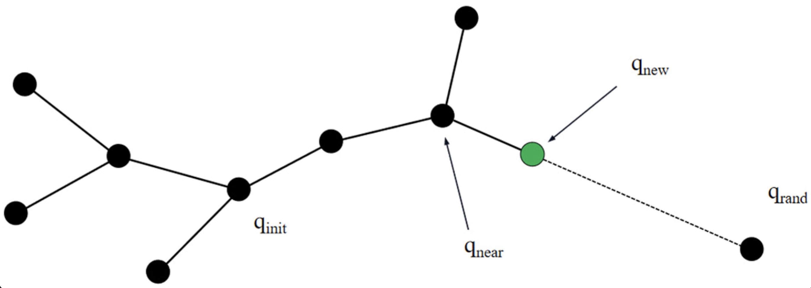
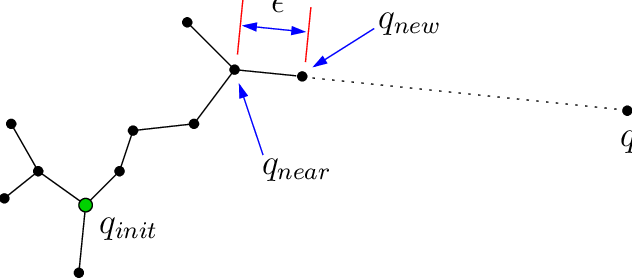

We look into sequential code for RRT.
We also found Lecture notes from Robotics Institute
TL:DR
Rice Universtiy Video
What we learned from the video:
- Sequential Approach The sequential approach essentailly randomly choose a point and advance towards that point for a fixed step size. When we say advance we mean the tree takes the closest node to that point and grow a new node. The randomness lies within the angle where we advance.
- Their Parallel Approach Instead of growing one node at one time, they grow three nodes parallely and communicate the tree. So the growing is done parallely. Here's their result:


We think in the future we can randomly select the step size
Challenges
Rapidly exploring random trees (RRT) is a well-known algorithm for path-planning, but it is often computationally expensive and unstable. This is due to the fact that RRT must expand in all different directions, leading to significant variation in single core execution times, from quickly finding the goal to frequently hitting obstacles.
We list the potential setbacks below:
- Implementing RRT with linear speedup using multiple cores in a single agent planning context is our first challenge.
- Naive assignment of subtrees to each core can result in load imbalance due to some nodes hitting obstacles and terminating early.
- Task stealing will be implemented to allow threads that have hit dead ends to take expanding subtrees from others and finish the work faster.
- Careful selection of stolen data and when to steal is crucial to ensure correctness and minimize communication overhead.
- Multi-agent planning requires additional considerations, such as allowing overlapping paths for agents travelling to the same spot at different times and resolving collisions when multiple agents occupy the same spot at the same time.